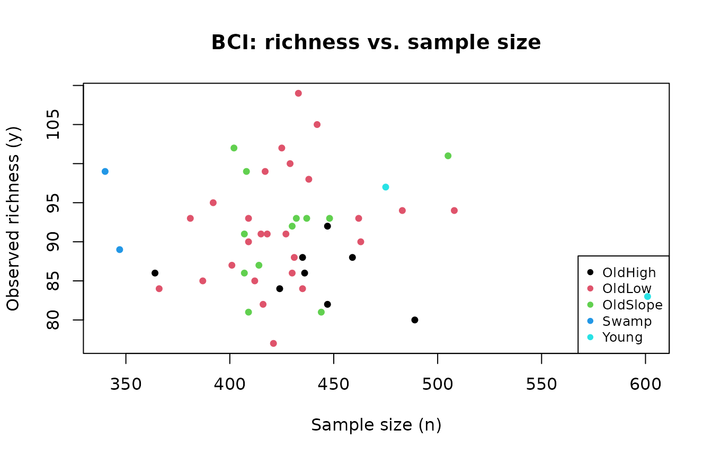
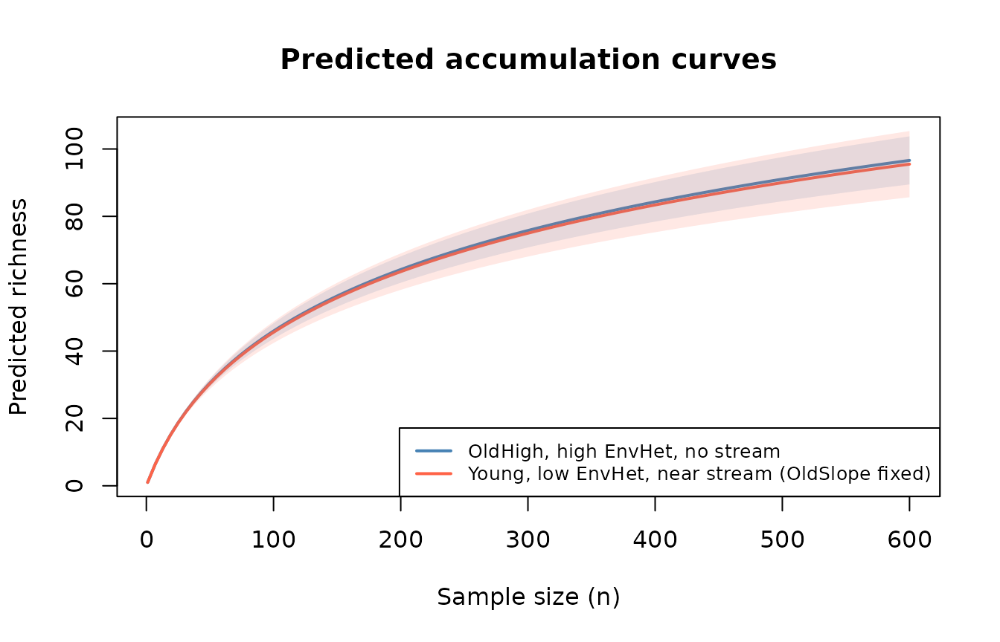

Getting started with HubbellGLM: the Barro Colorado Island dataset
Alessandro Zito
Source:vignettes/bci_tutorial.Rmd
bci_tutorial.RmdIntroduction
The HubbellGLM package implements Hubbell regression, a generalized linear model (GLM) for -diversity (Zito et al. 2026). The model links environmental covariates to Hubbell’s fundamental biodiversity number , a single dimension-free parameter that controls the rate at which new species accumulate as a function of sample size, and can be converted analytically into Shannon entropy, the Simpson index, and Hill numbers. This bypassess the need to choose which biodiversity index to use in the analysis.
This vignette introduces the statistical framework and demonstrates
the package using the Barro Colorado Island (BCI)
dataset, a classic tree-census dataset from a 50-ha tropical
forest plot in Panama. The original version of the data is downloaded
from the R package vegan (Oksanen et
al. 2024).
Model details
Hubbell’s fundamental biodiversity number
Let denote the number of distinct species (richness) observed in a sample of individuals drawn from a community. Under Hubbell’s neutral theory of biodiversity (Hubbell 2001), the distribution of is given by
where are the (unsigned) Stirling numbers of the first kind, is the gamma function, and is the fundamental biodiversity number (Hubbell 2001). This distribution arises from the Ewens sampling formula (Ewens 1972), which is mathematically equivalent to the Dirichlet process described in (Ferguson 1973) and (Antoniak 1974).
In this model, the richness accumulates logarithmically as a function of , so that This relationship makes equivalent to the biodiveristy number in the log-series model proposed by (Fisher, Corbet, and Williams 1943). A larger means richer, more even communities; a smaller means communities dominated by a few abundant species. In particular, the expected species richness in a sample of size is
Hence, the above mean is interpreted as a species accumulation curve that grows logarithmically with . Moreover, since Hubbell’s model is equivalent to the Dirichlet process, all standard biodiversity indices have closed-form model-based expressions in terms of (Rigon, Hsu, and Dunson 2025; Pitman 2006):
| Index | Sample-based | Model-based |
|---|---|---|
| -diversity | ||
| Shannon | ||
| Simpson | ||
| Hill () |
Here is the digamma function, is the beta function, and is the relative abundance of the -th species.
The Hubbell regression
Since the distribution of is an exponential family, we can use it to build a generalized linear model. In particular, our goal is to link the fundamental biodiversity number with . We call this model Hubbell regression. Specifically, letting denote the sampling sites (i.e. the observations), we let
This is the canonical link (). A one-unit increase in covariate translates into a change in -diversity.
The polynomial link function
The canonical link constrains species richness to grow logarithmically with . To allow for heavier-tailed abundance distributions (e.g. arthropods), the package supports a more general polynomial link controlled by :
- : logarithmic growth (canonical Hubbell link).
- : polynomial growth; the regression-based diversity index is .
- : finite asymptotic richness.
The parameter
is estimated by maximum likelihood via estimate_sigma() and
then held fixed across nested model specifications to ensure comparable
regression coefficients.
Robust standard errors: Jaccard-adjusted variance–covariance
Standard GLM inference assumes conditionally independent observations. In species-richness data, the same species may appear in multiple sites, inducing cross-site dependence that the likelihood ignores. HubbellGLM corrects for this using heteroskedastic-consistent sandwich standard errors, where spatial dependence between sites and is measured by the Jaccard similarity index (the fraction of shared species between the two samples).
Let be the design matrix, the matrix of IRLS working weights, and the score for observation . The Jaccard-adjusted variance–covariance matrix is
This is computed by vcov_species(fit, Dshared), where
Dshared is an
matrix of pairwise Jaccard similarities. When species membership between
sites is unavailable (as in the BCI example below), the standard
Fisher-information-based vcov(fit) is used.
Package functions
HubbellGLM() — fit a Hubbell regression
The main fitting function mirrors the syntax of
stats::glm. The response is cbind(n, y), where
n is the sample size (number of individuals) and
y is the observed richness.
fit <- HubbellGLM(cbind(n, y) ~ x1 + x2,
family = hubbell(sigma = 0),
data = mydata)Key arguments:
| Argument | Description |
|---|---|
formula |
As in glm. Response must be
cbind(n, y). |
family |
A Hubbell family object from hubbell() or
quasihubbell(). |
data |
A data frame. |
The function returns an object of class HubbellGLM that
is compatible with summary(), coef(),
vcov(), predict(), residuals(),
deviance(), AIC(), BIC(), and
step().
hubbell() — family object
hubbell(link = "polyseries", sigma = 0)Sets the GLM family. sigma = 0 gives the canonical
(logarithmic) link; any value in
gives the polynomial link. Use quasihubbell() for
quasi-likelihood inference when the variance is suspected to be
inflated.
estimate_sigma() — estimate the growth-rate
parameter
sigma_hat <- estimate_sigma(cbind(n, y) ~ 1, data = mydata)Finds the maximum-likelihood
by minimising the BIC of the null model over
using nlminb. Fix
to this value for all subsequent models to ensure comparability of
regression coefficients across nested specifications.
predict.HubbellGLM() — predict richness at new
sites
predict(fit, newdata = new_sites, type = "response")-
type = "link"returns . -
type = "response"returns the predicted mean richness .
predict_curve() — predicted accumulation curve
curve <- predict_curve(fit, xnew = new_site, n = 2000, npoints = 200)Returns a data frame with columns n (sample size grid),
pred (predicted richness), and se (standard
error via the delta method). Useful for visualising how richness
accumulates at a specific new location.
vcov_species() — Jaccard-adjusted
variance–covariance
Dshared <- get_shared_species(species_matrix) # N x N Jaccard matrix
vcov_adj <- vcov_species(fit, Dshared)Returns the sandwich variance–covariance matrix described in Section
3. Pass it to lmtest::coeftest(fit, vcov = vcov_adj) to
obtain robust z-scores and p-values.
BCI example
The data
The BarroColorado dataset contains 50 subplots from the
Barro Colorado Island 50-ha plot. Each row is one subplot with:
-
n: number of individual trees sampled. -
y: number of distinct species observed. -
EnvHet: environmental heterogeneity (continuous). -
Habitat: habitat type (factor with 5 levels). -
Stream: proximity to a stream (Yes/No).
library(HubbellGLM)
data("BarroColorado")
head(BarroColorado)
#> n y EnvHet Habitat Stream
#> 1 448 93 0.6272 OldSlope Yes
#> 2 435 84 0.3936 OldLow Yes
#> 3 463 90 0.0000 OldLow No
#> 4 508 94 0.0000 OldLow No
#> 5 505 101 0.4608 OldSlope No
#> 6 412 85 0.0768 OldLow No
plot(BarroColorado$n, BarroColorado$y,
col = as.integer(BarroColorado$Habitat),
pch = 16, cex = 0.9,
xlab = "Sample size (n)",
ylab = "Observed richness (y)",
main = "BCI: richness vs. sample size")
legend("bottomright", legend = levels(BarroColorado$Habitat),
col = 1:5, pch = 16, cex = 0.8)
Observed species accumulation: richness vs. sample size across habitat types.
The canonical link (logarithmic growth)
These are three models run with the canonical link
# M0: the null model
fit_null <- HubbellGLM(cbind(n, y) ~ 1,
family = hubbell(sigma = 0),
data = BarroColorado)
# M1: environmental heterogeneity only
fit_M1 <- HubbellGLM(cbind(n, y) ~ EnvHet,
family = hubbell(sigma = 0),
data = BarroColorado)
# M2: add habitat type
fit_M2 <- HubbellGLM(cbind(n, y) ~ EnvHet + Habitat,
family = hubbell(sigma = 0),
data = BarroColorado)
# M3: add stream proximity
fit_M3 <- HubbellGLM(cbind(n, y) ~ EnvHet + Habitat + Stream,
family = hubbell(sigma = 0),
data = BarroColorado)
summary(fit_M3)
#>
#> Call:
#> HubbellGLM(formula = cbind(n, y) ~ EnvHet + Habitat + Stream,
#> family = hubbell(sigma = 0), data = BarroColorado)
#>
#> Coefficients:
#> Estimate Std. Error z value Pr(>|z|)
#> (Intercept) 3.43326 0.05523 62.161 < 2e-16 ***
#> EnvHet 0.07146 0.09230 0.774 0.43880
#> HabitatOldLow 0.14270 0.05534 2.579 0.00992 **
#> HabitatOldSlope 0.13352 0.06224 2.145 0.03193 *
#> HabitatSwamp 0.26655 0.11023 2.418 0.01560 *
#> HabitatYoung -0.04071 0.10360 -0.393 0.69439
#> StreamYes -0.10782 0.05879 -1.834 0.06665 .
#> ---
#> Signif. codes: 0 '***' 0.001 '**' 0.01 '*' 0.05 '.' 0.1 ' ' 1
#>
#> (Dispersion parameter for hubbell family taken to be 1)
#>
#> Null deviance: 49.331 on 49 degrees of freedom
#> Residual deviance: 34.543 on 43 degrees of freedom
#> AIC: 343.26
#>
#> Number of Fisher Scoring iterations: 3Interpreting coefficients
Coefficients are on the log- scale. A coefficient means a one-unit increase in is associated with a change in -diversity.
Model comparison via deviance
cat("Null deviance: ", round(deviance(fit_null), 1), "\n")
#> Null deviance: 49.3
cat("M1 deviance: ", round(deviance(fit_M1), 1), "\n")
#> M1 deviance: 49.2
cat("M2 deviance: ", round(deviance(fit_M2), 1), "\n")
#> M2 deviance: 37.9
cat("M3 deviance: ", round(deviance(fit_M3), 1), "\n")
#> M3 deviance: 34.5The pseudo- for each model relative to the null:
Predicted accumulation curves
predict_curve() returns the fitted accumulation curve
(with pointwise standard errors) at any new covariate combination. Here
we compare a high-heterogeneity OldHigh subplot with a
near-stream Young subplot.
new_sites <- data.frame(
n = c(500, 500),
y = c(1L, 1L), # placeholder required by the formula
EnvHet = c(0.6, 0.0),
Habitat = factor(c("OldHigh", "OldSlope"),
levels = levels(BarroColorado$Habitat)),
Stream = factor(c("No", "Yes"),
levels = levels(BarroColorado$Stream))
)
curve1 <- predict_curve(fit_M3, xnew = new_sites[1, ], n = 600, npoints = 100)
curve2 <- predict_curve(fit_M3, xnew = new_sites[2, ], n = 600, npoints = 100)
pred1 <- curve1$mean[, 1]; se1 <- curve1$se[, 1]
pred2 <- curve2$mean[, 1]; se2 <- curve2$se[, 1]
plot(curve1$n, pred1, type = "l", col = "steelblue", lwd = 2,
ylim = range(c(pred1 - 2*se1, pred2 + 2*se2)),
xlab = "Sample size (n)", ylab = "Predicted richness",
main = "Predicted accumulation curves")
lines(curve2$n, pred2, col = "tomato", lwd = 2)
# 95% CI bands
polygon(c(curve1$n, rev(curve1$n)),
c(pred1 - 2*se1, rev(pred1 + 2*se1)),
col = adjustcolor("steelblue", 0.15), border = NA)
polygon(c(curve2$n, rev(curve2$n)),
c(pred2 - 2*se2, rev(pred2 + 2*se2)),
col = adjustcolor("tomato", 0.15), border = NA)
legend("bottomright",
legend = c("OldHigh, high EnvHet, no stream",
"Young, low EnvHet, near stream (OldSlope fixed)"),
col = c("steelblue", "tomato"), lwd = 2, cex = 0.8)
Predicted accumulation curves for two contrasting subplot types.
Derived biodiversity indices
Once is recovered from the fitted model, all standard biodiversity indices follow analytically.
alpha_n <- function(mu, n) {
uniroot(function(a) mean_dirichlet_process(a, n) - mu,
c(1e-6, 1e6))$root
}
# Predictions at n = 500 for each subplot
mu_pred <- predict(fit_M3, type = "response")
n_vec <- BarroColorado$n
alpha_vals <- mapply(alpha_n, mu_pred, n_vec)
shannon_vals <- digamma(alpha_vals + 1) - digamma(1)
simpson_vals <- 1 / (alpha_vals + 1)
cat("Median alpha: ", round(median(alpha_vals), 3), "\n")
#> Median alpha: 35.729
cat("Median Shannon: ", round(median(shannon_vals), 3), "\n")
#> Median Shannon: 4.167
cat("Median Simpson: ", round(median(simpson_vals), 4), "\n")
#> Median Simpson: 0.0272Model comparison via AIC and BIC
Compare nested models directly using AIC() and
BIC().
aic_vals <- c(
Null = AIC(fit_null),
EnvHet = AIC(fit_M1),
`+Habitat` = AIC(fit_M2),
`+Stream` = AIC(fit_M3)
)
bic_vals <- c(
Null = BIC(fit_null),
EnvHet = BIC(fit_M1),
`+Habitat` = BIC(fit_M2),
`+Stream` = BIC(fit_M3)
)
round(rbind(AIC = aic_vals, BIC = bic_vals), 2)
#> Null EnvHet +Habitat +Stream
#> AIC 346.05 347.89 344.66 343.26
#> BIC 347.96 351.71 356.13 356.65The model with the lowest AIC/BIC is preferred. Note that
step.HubbellGLM() can also be called directly for automated
backward/forward selection; see ?step.hubbell.
Estimate
Before fitting any covariate model, estimate the accumulation-curve growth rate from the null model.
sigma_hat <- estimate_sigma(formula = fit_M3$formula, data = BarroColorado)
#> Evaluating sigma = 0
#> Evaluating sigma = 1.490116e-08
#> Evaluating sigma = -1
#> Evaluating sigma = -0.9999822
#> Evaluating sigma = -0.9063331
#> Evaluating sigma = -0.9063401
#> Evaluating sigma = -0.2471878
#> Evaluating sigma = -0.7269672
#> Evaluating sigma = -0.7269869
#> Evaluating sigma = -0.5742469
#> Evaluating sigma = -0.5742609
#> Evaluating sigma = -0.6462721
#> Evaluating sigma = -0.6462619
#> Evaluating sigma = -0.6373287
#> Evaluating sigma = -0.6373382
#> Evaluating sigma = -0.6373287
cat("Estimated sigma:", round(sigma_hat, 4), "\n")
#> Estimated sigma: -0.6373A value near zero indicates near-logarithmic growth, which is consistent with the Dirichlet-process baseline. Values in indicate polynomial (heavier-tailed) growth, while implies that the accumulation curve eventually converges to a finite number. —
Session information
sessionInfo()
#> R version 4.3.1 (2023-06-16)
#> Platform: x86_64-pc-linux-gnu (64-bit)
#> Running under: Ubuntu 20.04.6 LTS
#>
#> Matrix products: default
#> BLAS: /usr/lib/x86_64-linux-gnu/openblas-pthread/libblas.so.3
#> LAPACK: /usr/lib/x86_64-linux-gnu/openblas-pthread/liblapack.so.3; LAPACK version 3.9.0
#>
#> locale:
#> [1] LC_CTYPE=en_US.UTF-8 LC_NUMERIC=C
#> [3] LC_TIME=en_US.UTF-8 LC_COLLATE=en_US.UTF-8
#> [5] LC_MONETARY=en_US.UTF-8 LC_MESSAGES=en_US.UTF-8
#> [7] LC_PAPER=en_US.UTF-8 LC_NAME=C
#> [9] LC_ADDRESS=C LC_TELEPHONE=C
#> [11] LC_MEASUREMENT=en_US.UTF-8 LC_IDENTIFICATION=C
#>
#> time zone: Europe/Berlin
#> tzcode source: system (glibc)
#>
#> attached base packages:
#> [1] stats graphics grDevices utils datasets methods base
#>
#> other attached packages:
#> [1] HubbellGLM_1.0.0
#>
#> loaded via a namespace (and not attached):
#> [1] digest_0.6.36 desc_1.4.2 R6_2.5.1 fastmap_1.2.0
#> [5] xfun_0.57 cachem_1.0.6 knitr_1.51 htmltools_0.5.8.1
#> [9] rmarkdown_2.27 lifecycle_1.0.4 cli_3.6.3 sass_0.4.9
#> [13] pkgdown_2.2.0 textshaping_0.4.0 jquerylib_0.1.4 systemfonts_1.1.0
#> [17] compiler_4.3.1 rprojroot_2.0.3 rstudioapi_0.14 tools_4.3.1
#> [21] ragg_1.5.2 bslib_0.8.0 evaluate_0.24.0 Rcpp_1.0.14
#> [25] yaml_2.3.10 jsonlite_1.8.4 htmlwidgets_1.6.1 rlang_1.1.4
#> [29] fs_1.6.0